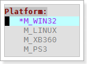

Intro
When writing a c/cpp project, sometimes we use macro to preset several block of code for compiling. The macro is in common use in cross-platform technique, but abuse them will lead to a macro hell, which will make the source code hard to understand, and increase the time for maintaining. To help the programmer increase the speed in reading and writing the code with macros, exVim provide the exMacroHighlight plugin.
The exMacroHighlight will shows the gray color for those undefined codes, similar with what vs.net 2005 do. The differences are:
- exMacroHighlight only process those user input macros.
- exMacroHighlight can dynamically switch the macro definition.
- exMacroHighlight can temporarily close a group of macros in highlight process.
Syntax
Overview
The main idea of exMacroHighlight is let user define the macros to participate the highlight process. To write down the macros you want, first open the exMacroHighlight window by pressing <leader>aa.
When you open a exMacroHighlight window in a new project, it is a blank page. The window used for writing macro defines in groups. The syntax as shows as:
GroupName_1:
MacroName_11
MacroName_12
MacroName_13
...
MacroName_1n
GroupName_2:
MacroName_21
MacroName_22
MacroName_23
...
MacroName_2n
...
...
...
GroupName_n:
MacroName_n1
MacroName_n2
MacroName_n3
...
MacroName_nn
Macro Group
A macro group is a word write from beginning of the column, and with mark :, as the code shows below:
MacroGroup_1:
You can put what ever you want to named the group, it just tell the exMacroHighlight the text below start with “four space” will be a macro in this group.
Only one macro can be defined in one group.
Macro
A word start with “four space” will be treat as a Macro. The name of the macro must consist with the macro in the project. The syntax show as below:
MacroGroup_1:
Macro_1
Macro_2
...
Macro_n
You can put one or more Macro in one group.
Example
Suppose you have macro M_WIN32, M_LINUX, M_XB360 and M_PS3 in your project. Only one can be define to true at the same time. So we can treat these macros as a Macro Group named it as Platform, then put the macros under it as the text shows below::
Platform:
M_WIN32
M_LINUX
M_XB360
M_PS3
Here shows how it looks like in plugin:

Note: a macro group is not create to organize similar meaning of macro in one group, It is said there can only be one item (macro) been enable/define in one group. Which means, when you choose M_WIN32, the M_LINUX, M_XB360, M_PS3 will be treat as they are undefined, or define as 0. And that is how macro highlight works.
Usage
Enable/Disable Macro
When you choose a macro by <return>, the choosing macro will have a “star” marks in fron of it, like the picture shows below. Also its color will be different than others. And the code in edit window will highlight obey the rules.

Enable/Disable Macro Group
If you don’t want any macros in one group have affect with exMacroHighlight, just disable that group by press <return> in the GroupName. If disable you will see [x] marks behind the group name as picture shows below. press <return> again to re-enable it.

Combine different macro define
You can combined several group macro together, for example, it is valid to highlight codes with #if defined (M_WIN32) && defined (M_DEBUG), and here is the example:

when I switch the macro define in group Configuration from M_DEBUG to M_RELEASE, the highlight of code changes:

There are tones of way to combine macro highlights, I can’t guaranty the plugin works all right for all of them. For example you may have problem with #if defined (M_WIN32) && defined (M_UNKNOWN) where the M_UNKNOWN macro is not define in the macro highlight window. But for common use, it is enough. Complexity brings inefficient, why don’t we keep everything like vim.
Settings
The chapter exMacroHighlight shows the detail settings of exMacroHighlight.